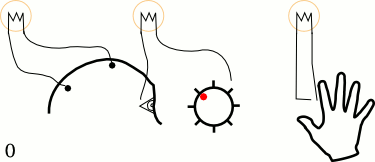
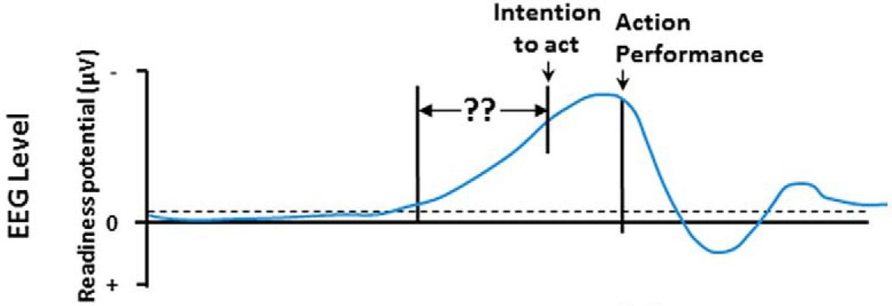
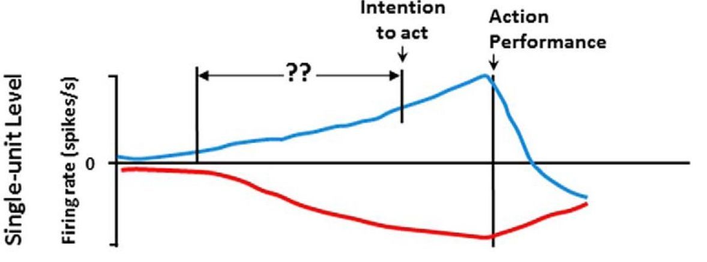
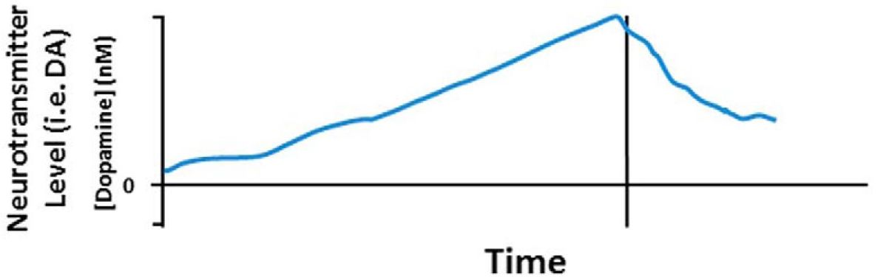

Chapter 3
Certainly, the text discusses various systems and entities, and how their future states might be determined by their current states and history.
The text also introduces the concept of “Determinism,” which is the idea that the next state of something is determined purely by its current state and history. This is a principle that, in theory, could apply to all physical systems, including the universe as a whole.
| Entity/System | Future State Determined By | Mediating Factors |
|---|---|---|
| Ball | Laws of Physics | Simple object, behavior completely determined by physical laws. |
| Pool/Billiards/Snooker Table | Laws of Physics | Complicated system but still governed by physical laws. |
| Earth-Moon System | Laws of Physics | A more complicated version of a billiards table, but still determined by physical laws. |
| Planetary Orbits (e.g., Jupiter and Saturn) | Laws of Physics, Calculus | Higher-level interactions in gravity can be described using calculus. |
| Humans | Free Will | Appear to have the ability to choose between alternative courses of action. |
| Universe | Laws of Physics | If the exact state is known, future states can be determined by applying physical laws. |
| Aspect | Humans | Roborat |
|---|---|---|
| Consciousness | Believed to have conscious control over actions; however, research suggests this might be an illusion. | Not aware it is under external control; acts as if it has free will. |
| Control Mechanism | Brain events cause consciousness; free will is debated. | Electrodes implanted in motor cortex and medial forebrain bundles control actions. |
| Awareness of Control | Generally believe they are in control of their actions. | Unaware of external control; believes it is acting of its own accord. |
| Reward System | Psychological and physiological rewards motivate behavior. | Medial forebrain bundles stimulated as part of the reward system to guide behavior. |
| External Influence | Social, environmental, and possibly unknown factors. | Direct external control via electrodes and transmitter. |
| Complexity | Complex cognitive functions, including self-reflection and the ability to question free will. | Simple cognitive functions; cannot reflect upon its situation. |
| Free Will | Controversial; some believe in free will, while others think it’s an illusion. | Appears to act on “free will,” but it’s actually controlled by external signals. |
| Purpose of Actions | Actions often driven by complex motivations, goals, and beliefs. | Actions are conditioned responses to specific signals sent to the brain. |
| Ethical Considerations | Ethical considerations often guide behavior. | No ethical considerations; acts based on conditioning and external control. |
| Self-Reflection | Capable of questioning the nature of consciousness and free will. | Incapable of self-reflection or questioning its state. |
| Benefits from Believing in Free Will | Potential harm of Believing in Free Will |
|---|---|
| Helps maintain a narrative of events in our lives. | Can lead to attributing control where there is none. |
| Gives a sense of responsibility and morality. | May encourage superstitious beliefs and magical thinking. |
| Helps maintain social cohesion and group dynamics. | |
| Encourages proactive behavior and action. | |
| Research suggests it leads to more moral behavior, less cheating, and more willingness to help others. | Research on these effects is not universally accepted and may be short-lived. |
| Raises questions about the role of consciousness if everything is decided unconsciously. |
| Philosophical Position | Support for Free Will | Against Free Will |
|---|---|---|
| Determinism | - | Believes that all events, including human actions, are determined by preceding events and laws of nature. Only one possible future. |
| Compatibilism | Argues that free will and determinism can co-exist. People could have acted otherwise than they do. | Must identify the flaw in the argument for determinism. Actions may still be seen as mediating history. State of the brain is determined by history. |
| Incompatibilism | - | Denies that free will and determinism can co-exist. |
| Libertarianism | Maintains free will by giving up on determinism. Various versions exist, some accepting dualism. | - |
| Factors Establishing Accountability | Factors Undermining Accountability |
|---|---|
| Legal definitions of sanity | Legal definitions of insanity or diminished responsibility (e.g., not guilty by reason of insanity) |
| Level of insight into one’s actions | Mental illnesses like schizophrenia |
| Antisocial Personality Disorder (ASPD) or psychopathy, characterized by low empathy, lack of remorse, etc. | |
| Neurological differences, such as amygdala malfunction or prefrontal cortex hyper-arousal | |
| Lower levels of neurotransmitter serotonin | |
| Early traumatic life events or brain differences present at birth | |
| Social factors like early poverty, social deprivation, parental unemployment | |
| Childhood trauma, neglect, and abuse | |
| Personality traits that make one more prone to risk-taking |
| Viewpoint | Argument for Responsibility | Argument Against Responsibility |
|---|---|---|
| Free Will | Individuals have the ability to choose between different courses of action, making them morally responsible for their choices. | If free will is an illusion, as some argue, then holding individuals fully responsible for their actions becomes problematic. |
| Determinism | If actions are determined by prior events and conditions, then society can hold individuals responsible as a form of social contract, even if they couldn’t have acted otherwise. | If all actions are predetermined by prior events, then the concept of moral responsibility is undermined. Individuals may not be fully responsible for their actions if they are simply “mediating history.” |
Mental Illness
Neurological Factors
Studies have shown that the brains of people with ASPD function differently, particularly in the amygdala and prefrontal cortex. This raises questions about their level of responsibility.
Social/Environmental Factors
Early social conditions like early development malnutrition and social neglect can increase likelihood of later criminal behavior, raising questions about moral responsibility.
The deterministic viewpoint might argue that these individuals are less responsible for their actions due to these external factors.
A free-will perspective might still hold them accountable.
Neuroethics and Neurocriminology
These fields study the implications of neuroscience for understanding morality, ethics, and criminal behavior.
Explore questions like whether it is ethical to treat someone with ASPD against their will.
These fields explore the ethical implications of neuroscience findings on questions of free will, determinism, and moral responsibility.
Antisocial Personality Disorder (ASPD)
Should individuals with ASPD should be held responsible for their actions?
Western law tends to hold individuals responsible, suggesting a free-will perspective that they could have acted otherwise.




We sometimes feel compelled to do things against our will
OCD (obsessive-compulsive disorder)
Rehoboam is a Quantum AI computer system owned and operated by the Incite corporation. It is used for the social engineering of whole populations. Rehoboam’s main function is to impose an order to human affairs by careful manipulation and prediction of the future made possible by analysis of the large data set Incite have collected.